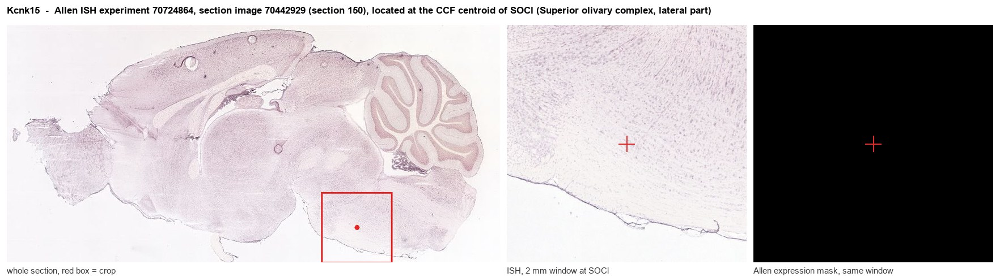
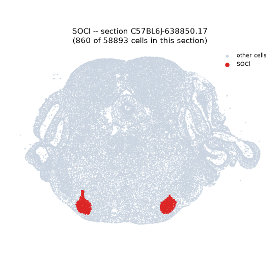
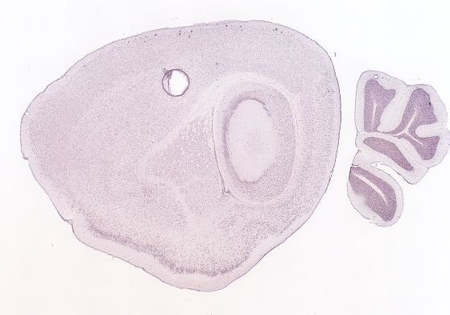
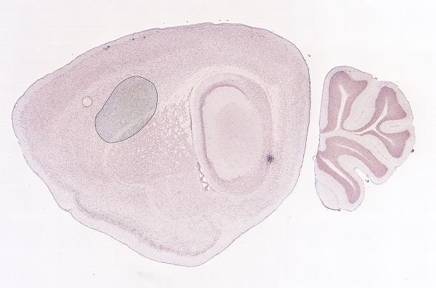
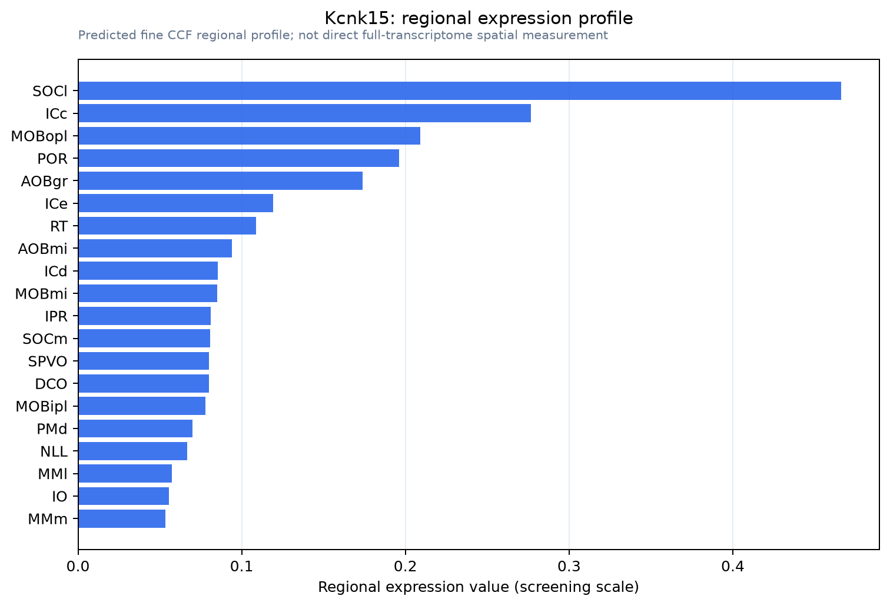

Kcnk15
Potassium channel subfamily K member
Spatial tier: STRICT_EXCLUSIVE · Class: ION_CHANNEL · Top region: SOCl (Superior olivary complex, lateral part) · Positive regions: 7/554
50.7Discovery Score
41.4Targetability Score
CEvidence grade C
What this means: Kcnk15: predicted fine-region profile is strict-exclusive, with 7 positive regions out of 554 (limit 12); direct spatial validation is required.
Function in SOCl: evidence, prediction, innovation
- Gene function
- Kcnk15 encodes TASK-5 (K2P15.1), an acid-sensitive two-pore-domain K+ channel subunit. Homomeric TASK-5 is retained intracellularly and silent, but heterodimers with TASK-1 and TASK-3 reach the membrane and give leak K+ currents with distinct conductance, Gq sensitivity and pharmacology (Rinne 2024).
- Region function
- The lateral superior olive compares excitatory ipsilateral cochlear-nucleus input with inhibitory glycinergic MNTB input to encode interaural level differences for sound localization.
- Published in this region
- direct TASK-5 mRNA in rat is mainly in the central auditory pathway (Karschin 2001), and Kcnk15 ranked among the ten most SOC-enriched transcripts at P4 and P25 (Ehmann 2013). Saber et al. (2024) found Task5 rising at hearing onset (P10-14) in VCN and MNTB; knockouts had increased rheobase in phasic VCN neurons, altered MNTB input resistance, reduced ABR wave I and III amplitudes and raised high-frequency thresholds; LSO was not recorded.
- Predicted function
- Prediction: in LSO principal neurons TASK-5/TASK-1/3 heterodimers set a low input resistance sharpening excitation-inhibition timing for interaural level difference coding. Kcnk15 loss should broaden ILD tuning and degrade azimuthal sound localization, especially at high frequencies; heterodimer-selective blockers would mimic this.
- Innovation
- ★★☆☆☆ 2/5 Expression and a knockout study exist for the SOC, but LSO function and behavioural localization remain open.
- Tools
- Task5 (Kcnk15) knockout mouse (Saber 2024); no selective TASK-5 ligand, but TASK-1/3 blockers A1899 and A293 act on heterodimers (Rinne 2024); RNAscope probes.
- References
Direct evidence located at the region

Allen ISH experiment 70724864, section image 70442929 (section 150): the section that contains the CCF centroid of Superior olivary complex, lateral part according to the Allen image-to-atlas alignment (reference_to_image), with a 2 mm window around that point. Left: whole section, red box = window. Middle: ISH signal. Right: Allen's expression-mask view of the same window. open this image in the Allen viewer
Look it up yourself: Allen Mouse Brain ISH for Kcnk15Allen reference atlas: SOCl (structure 114)ABC Atlas MERFISH viewer(in the ABC Atlas choose dataset MERFISH-C57BL6J-638850-CCF, colour cells by gene "Kcnk15" or by parcellation_substructure "SOCl")All genes confined to SOCl + 3-D brain
Direct spatial evidence
MERFISH REGION LOCATOR

DIRECT ALLEN ISH

DIRECT ALLEN ISH

Regional expression figure

Predicted WMB × fine-CCF profile; not direct full-transcriptome spatial measurement.
Spatial profile
Evidence and specificity
- Evidence status
- PREDICTED_FINE
- Direct sources
- None; predicted localization only
- Exclusive threshold
- 12 positive regions out of 554
- Spatial specificity
- 0.441
- Top-region fraction
- 0.156
- Filter status
- PASS
Interpretation limits
- Cell-type-to-region projection is imputed expression, not direct spatial measurement.
- Adult reference atlases do not establish stability across age, sex, strain, state, or disease.
- Transcript abundance does not guarantee protein abundance or genetic-tool performance.